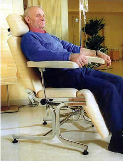

- Skutki kuracji
- Metale ciężkie a wolne rodniki
- Leczenie miażdżycy metodą chelatową
- Co to jest terapia chelatowa?
- Skuteczność
- Chelatacja doustna to błąd
- Cukrzyca
- Badania
- Profilaktyka geriatryczna
- Bezpieczeństwo metody
- Koszty
- Dlaczego trwa cisza o chelatacji?
- Legalność chelatacji
Nowa metoda leczenia miażdżycy! Terapia z udziałem chelatacji!
Nieoperacyjna metoda lecznicza rozpuszczająca blaszki miażdżycowe w naczyniach krwionośnych, jak dotychczas pierwsza w dziejach ludzkości metoda eliminująca źródło wolnych rodników w ustroju.
Jest to nowa w Polsce procedura lecznicza, która szczególnie korzystnie i skutecznie wpływa na zdrowie osób z poważnymi komplikacjami krążeniowymi, takimi jak: zawał mięśnia sercowego, przebyty lub zagrażający udar mózgu czy bóle niedokrwienne kończyn wywołując zdrowotnie zjawisko zwane REWITALIZACJĄ - powrót życia i proporcjonalnych do wieku sił życiowych - gdyż większość chorych ludzi, którzy w związku z chorobą czują się znacznie starzej niż by to wynikało z ich wieku, a poddających się tej terapii zgłasza, iż po procedurze leczniczej z udziałem chelatacji czują się, gdy chodzi o sprawność biologiczną, jakby im ujęto 10 - 15 lub nawet więcej lat.
Procedura ta jest stosowana z wielkim powodzeniem już przez dziesiątki lat w USA. Jedyne jej ograniczenia polegają na tym, że trzeba znaleźć wykwalifikowanego i odpowiednio zorganizowanego lekarza do jej przeprowadzenia zgodnego ze sztuką lekarską i procedurą, a takich samodzielnych lekarzy jest w dzisiejszych czasach niewielu. Na skuteczną kurację wymaganych jest minimum 20 zabiegów. Zabieg taki to standartowy wlew kroplowy, w którym znajdujemy między innymi EDTA jako zasadniczy środek leczniczy. Pozostałe komponenty kroplówek mają ważne działanie wspomagajace i utrwalające działanie główne. Najczęściej wlew kroplowy wykonywany jest w pozycji siedzącej. Zabiegów jest zwykle od 20 do 50, każdy trwający 2 - 4 godziny.
Koszty terapii z udziałem chelatacji, które ponosi pacjent, są znacznie niższe w porównaniu z opłatą za przeciętną operację "by - pass" czy angioplastykę, nie wspominając nawet o tym, że każdy z tych wspaniałych i jeszcze do niedawna niewykonalnych technicznie zabiegów chirurgicznych omija tylko kilka centymetrów najmocniej zatkanej tętnicy, całej pozostałej, chorej reszty, nawet nie dotykając, podczas gdy terapia z udziałem chelatacji oczyszcza cały układ krążenia.
Kuracja miażdżycy - podstawowe i najbardziej spektakularne wskazanie do chelatacji - przeciętnie obejmuje 30 zabiegów kroplowych. Przeważnie 10 pierwszych wlewów wykonuje się 3 razy w tygodniu, 10 następnych - 2 razy w tygodniu, 10 ostatnich - raz lub dwa razy w tygodniu, decyduje dynamika postępów leczenia. Ilość ew. dodatkowych przetoczeń indywidualnie określa lekarz prowadzący proporcjonalnie do efektów kuracji pod koniec zaplanowanej serii zabiegów. Leczenie trwa zazwyczaj od 3 do 5 miesięcy.
Oprócz samego EDTA, który, można by tak powiedzieć, robi główną robotę, podczas kuracji w określonym czasie podawane są do konkretnych wlewów istotne w dawce i proporcji składniki utrwalajace efekt przeciwmiażdżycowy oraz istotne leki potęgujące ten efekt. Podawane są ponadto indywidualne wskazówki przy konkretnych zachorowaniach by nie doszło szybko do nawrotów. Dalsze leczenie jest zależne od zaawansowania choroby oraz od zmiany niewłaściwego trybu życia chorego, czesto wystarcza dwie trzy wskazówki i to niezbyt uciążliwe. Chory powinien zmienić ze złych na dobre swoje przyzwyczajenia dotyczące odżywienia, ruchu (wysiłku fizycznego), nałogów, w których to warunkach powstała miażdżyca.
Jeśli działanie terapii z udziałem chelatacji - zahamowanie procesów degeneracyjnych - wesprzemy innymi, również bez działań ubocznych, zabiegami energetyzującymi, mobilizującymi procesy regeneracji, takimi jak: akupunktura, akupresura, bioenergoterapia, homeopatia, joga, czi-kung i podobnymi z tej dziedziny, jak to dość często łączone jest w "Ośrodkach Chelatacji Doktor Krasicki - Rewitalizacja" uzyskamy wtedy optymalne zregenerowanie organizmu i jego sił. Tym samym w efekcie doprowadzamy do niespotykanego w innych kombinacjach leczniczych wzmocnienia zdrowia. Po tak kompleksowej rewitalizacji, niosącej również gruntowne oczyszczenie organizmu, ten pozytywny efekt jest potem odczuwany wiele lat.
Lekarze, którzy próbowali stosować sam wersenian - EDTA, bez ww. indywidualnie dobieranych dla konkretnych pacjentów procedur uzupełniających zauważyli, że miażdżyca, która pięknie znika bezposrednio po przetoczeniach, już po kilku - kilkunastu miesiącach ma tendencję odbudowywać się dokładnie na tych samych miejscach i wlewy trzeba powtarzać. Dzieje się to jeśli nie przeprowadzi się tych określonych procedur będących tak na prawdę najważniejszym elementem trwałości sukcesu przeciwmiażdżycowego w rewitalizacji z udziałem chelatacji w Ośrodkach Doktor Krasicki w całym kraju, nad którą to procedurą czuwa i ją na bieżąco doskonali nasz Krajowy Koordynator.
W pojedynczych przypadkach prowadzi się również tzw. leczenie przypominające np. jedno, dwa przetoczenia na 1 do 3 miesięcy po zakończonej kuracji podstawowej, jednak rzadko przekracza się ogólnie liczbę 50 wlewów dla jednego pacjenta.
Umiejetnie przeprowadzona kuracja z udziałem EDTA daje długotrwałą, wieloletnią poprawę w zaawansowanej miażdżycy, eliminuje skutki degenerującego ustrój działania wolnych rodników, zmniejsza odczuwanie przeróżnych dolegliwości i opóźnia powstawanie chorób cywilizacyjnych jak również objawów przedwczesnego starzenia się.
Kuracje zalecane z innych niż miażdżyca powodów nie wymagają przeważnie aż tylu zabiegów i indywidualnie określa to lekarz. Może to być np. 3, 5, 7, 15 zabiegów - przetoczeń kroplowych.
Ogromną, nie kwestionowaną zaletą tej procedury leczniczej jest fakt, że jest to leczenie praktycznie jeden raz na życie, dość ściśle określona ilość zabiegów i efekty dość jasno przedstawiane są z góry, w przeciwieństwie do "cudownych" leczeń różnymi biopreparatami, gdzie należy brać te specyfiki często do końca życia najlepiej 3, a jeszcze lepiej 5 razy dziennie. Tego typu zalecenia, by cokolwiek brać dłużej niż trzy miesiące zawsze wzbudzają w nas czujność, czy przypadkiem nie trafiliśmy na naciagacza. Gdy chodzi o leczenie z udziałem chelatacji, tu z góry mówi się o jednej kuracji. O powtórce na razie domniemywa się tylko, ale ewentualnie, najszybciej, może za kilka lat.
Kuracja powoduje:
-
"Oczyszczenie" naczyń krwionośnych ze złogów lipidowo-cholesterolowych, ponieważ usuwając z blaszek miażdżycowych wapń, powoduje ich płynne rozpuszczanie się. Uwapnione złogi miażdżycowe, w miarę ich, trwających lata narastania, utrudniają coraz bardziej swobodny przepływ krwi, a tym samym doprowadzanie tlenu i substancji odżywczych do tkanek i komórek. Liczne badania wykazały wyraźny pozytywny efekt terapii z udziałem chelatacji na stan oraz drożność naczyń krwionośnych oraz na przepływ krwi, zarówno przez małe, jak i przez duże naczynia krwionośne. Odtykanie naczyń rozpoczyna się od tych najdrobniejszych.
Miażdżyca naczyń mózgowych prowadzić może do ostrego niedotlenienia mózgu i w konsekwencji do udaru mózgu, a przewlekłe niedotlenienie - do zmian otępiennych. Po ww. terapii następuje wyraźna poprawa ukrwienia mózgowia, a tym samym zapobiegamy wystąpieniu udaru i zmian otępiennych.
Miażdżyca naczyń wieńcowych prowadzi do zawału serca. Po terapii ww. leczeniu następuje zdecydowana poprawa czynności serca nawet w zaawansowanej chorobie niedokrwiennej.
Miażdżyca naczyń kończyn dolnych wywołuje bóle niedokrwienne, jak również powoduje zgorzel i konieczność amputacji (zwłaszcza u chorych na cukrzycę).
Chorzy po ww. kroplówkach z udziałem EDTA bardzo często unikają tych smutnych operacji.Miażdżyca drobnych naczyń gruczołów, doprowadzająca do ich gorszego ukrwienia, bardzo często osłabia czynności płciowe. Kuracja z udziałem chelatacji poprzez poprawę ukrwienia gruczołów czynność tę zdecydowanie poprawia.
-
"Odtrucie" organizmu z toksycznych jonów i cząsteczek metali ciężkich, które dostają się do organizmu wraz z zatrutym powietrzem, wodą i pożywieniem. Cząsteczki i jony metali ciężkich są następnie źródłem nieustannie katalizującym wolne rodniki, które z kolei biorą aktywny udział we wszelkich chorobach o podłożu zwyrodnieniowym jak również w carcinogenezie, czyli w procesie powstawania raka. Głównymi źródłami NADMIARU toksycznych metali są m.in. spaliny z pojazdów, dymy z fabryk, pyły z cementowni, w nadmiernych ilościach dym tytoniowy, chemiczne środki ochrony roślin, farby, zjadane przez nas środki konserwujące żywność, niektóre szczepionki stabilizowane solami rtęci i niektóre lekarstwa itp. Jest to szczególnie ważne dla osób mieszkających w dużych aglomeracjach miejskich lub w pobliżu fabryk chemicznych, właśnie tam w szczególności spotykamy nadmiar tych metalicznych czynników w organizmach ludzi.
Chorzy już w trakcie przeprowadzanych wlewów kroplowych zwykle zgłaszają ustępowanie szumu w uszach, poprawę słuchu, wzroku, pamięci, zmniejszenie się bólu, poprawę wydolności płciowej, wyraźną poprawę stanu skóry i włosów oraz inne pozytywne zmiany, niektórzy nawet już po pierwszych kroplówkach. Wszystkie te objawy są jednoznacznymi znakami pomyślnie przebiegającej REWITALIZACJI czyli powrotu normalnej dla konkretnego wieku sprawności biologicznej. Szczególnie interesujące są relacje osób z objawami zgorzeli nóg, ponieważ ci chorzy bardzo emocjonalnie przeżywają stopniową poprawę po kolejnych zabiegach, widząc i odczuwając, że oddala się od nich groźba amputacji kończyny.
REWITALIZACJA - skażenie organizmu metalami ciężkimi a wolne rodniki
Sporo uczonych i lekarzy, skłania się do zaakceptowania teorii mówiącej, że proces przedwczesnego starzenia się tkanek i całego ustroju wynika ze stopniowego i nadmiernego nagromadzania się cząsteczek metali ciężkich we wnętrzu naszych organizmów. Nadmiar cząstek metali ciężkich w ustroju człowieka powoduje jako katalizator znaczny wzrost powstawania tzw. wolnych rodników odpowiedzialnych za destrukcję tkanek a przez to ich przedwczesne starzenie się. Właśnie nagromadzające się z upływem lat poprzez pożywienie i oddychanie cząsteczki metali ciężkich przebywając w naszym wnętrzu są głównym i stałym źródłem katalizującym z dnia na dzień poważne ilości wolnych rodników wewnątrz organizmu.
Cząstka metalu ciężkiego, takie są jej normalne właściwości fizyko - chemiczne, przebywając w środowisku elektrolitowym, a tak jest w naszym organizmie, powoduje co chwilę rozerwanie, przylegającej do cząstki metalu, cząsteczki wody na części: tlen plus O+ i wodór minus H-, a wiec odwrotnie niż pod wpływem normalnej dysocjacji. Te odwrotnie niż normalnie zjonizowane cząstki H- i O+ mają znaczną energię niszczącą sąsiadujące cząsteczki, są bardzo niestabilne i dlatego nazywane są wolnymi rodnikami. Natomiast wolne rodniki, tu już niemal wszyscy uczeni są zgodni, są źródłem wielkiej ilości chorób z nowotworami na czele.
Wiadomo skądinąd, że niektóre metale, jak ołów, rtęć i kadm, są w nadmiarze dla organizmu trujące. Podniesiony poziom ołowiu i kadmu wiąże się z wysokim ciśnieniem krwi. Wszystkie metale, zarówno mikro jak nawet makroelementy, gdy znajdują się w nadmiarze w organiźmie, są toksyczne. EDTA normalizuje dystrybucję większości metalicznych pierwiastków, a także usprawnia metabolizm wapnia i cholesterolu eliminując te metaliczne "katalizatory", które uszkadzają błony komórkowe poprzez wytwarzanie wolnych rodników. Patologia wolnych rodników uznawana jest dziś przez większość uczonych i badaczy za istotny element przyczyniający się do rozwoju chorób serca, raka, cukrzycy i innych, związanych z biologicznym starzeniem się tkanek.
Organizmy biologiczne, niestety nie dysponują naturalnymi mechanizmami pozbywania się tych szkodliwych w nadmiarze cząsteczek metali. Usuwanie poprzez terapię z udziałem chelatacji z organizmu cząsteczek metali ciężkich a tym samym zdecydowane zmniejszanie ilości wytwarzanych za ich pośrednictwem wolnych rodników jest zatem prawdziwym, u korzenia, postępowaniem REWITALIZUJĄCYM nasz ustrój i niemal wszyscy poddający się ww. kuracji dostrzegają to działanie już nawet w trakcie przetoczeń.
Wobec powyższego ww. postępowanie z udziałem chelatacji ma realną szansę stać się niemal przyczynowym leczeniem przedwczesnego starzenia się ludzi. Postępowanie to, śmiało można by, w związku z powyższym, określić - "KURACJĄ ŻYCIA". W takiej sytuacji staje się całkiem realne osiąganie, przez osoby świadomie i rozsądnie kierujące swoim życiem, właściwego standardu co do długości oraz jakości zdrowia i życia, powyżej 90 lat w proporcjonalnej do wieku normalnej sprawności.
Leczenie miażdżycy z udziałem chelatacji
Na świecie ponad 600 milionów ludzi cierpi na choroby serca. W Polsce co roku umiera około 300.000 osób. Prawie co drugi przypadek zgonu spowodowany jest powikłaniami sercowo-naczyniowymi, a najczęstszy z nich, to następstwa miażdżycy (arteriosklerozy). Co roku na świecie umiera na zawał serca ponad 50 mln. ludzi, jest dokonywana amputacja wielu milionów kończyn. Przeprowadza się około 500 tysięcy operacji by-passów (zabiegów omijania zatkanych tętnic wieńcowych), wykona się podobną liczbę angioplastyk, które to zabiegi nierzadko muszą być niestety powtarzane. Operacje te bowiem, pomimo wręcz kosmicznej technologii, bedąc wielkim dobrodziejstwem ratujacym życie i chroniacym przed kalectwem nie usuwają, ba, nie dotykają nawet, samego procesu zatykania tętnic, lecz tylko odraczają koniec odtykając mechanicznie najbardziej newralgiczne miejsca zwężeń, a proces zatykania naczyń idzie sobie spokojnie dalej.
Na szczęście istnieje już skuteczne, niezbyt skomplikowane, efektywne i umiarkowane w kosztach rozwiązanie oczyszczające wszystkie naczynia krwionośne ze złogów miażdżycowych. Rozwiązaniem tym jest terapia z udziałem chelatacji. Może ona, poprzez usunięcie miażdżycy, uratować życie Tobie i Twoim najbliższym, zapobiec kalectwu i efektywnie ulżyć w cierpieniu. Dodatkowo, poprzez odtrucie z metali ciężkich i wyeliminowanie degenerującego i niszczącego mechanizmu wolnych rodników efektywnie, w zdrowiu, przedłużyć Ci życie.
Co to jest chelatacja?
Nazwa pochodzi od greckiego słowa chele, co oznacza pazur albo kleszcze, szczypce kraba.
Związki chelatowe (kleszczowe) powstają wówczas, gdy następuje trwałe połączenie substancji organicznej z jonem metalu co najmniej dwuwartościowego.
Przykładami naturalnych związków chelatowych są: hemoglobina, mająca w cząsteczce jon żelaza, chlorofil, mający w cząsteczce jon magnezu.
Taką substancją jest właśnie EDTA - syntetyczny - sztuczny - aminokwas stosowany już w latach 50 do leczenia zatruć metalami ciężkimi, ołowiem i rtęcią. Terapia ta najbardziej popularna jest w krajach wysokorozwiniętych.
Jeżeli wprowadzimy do organizmu taką aktywną substancję organiczną, to będzie ona z metalami tworzyła trwałe związki, dobrze rozpuszczalne w płynach ustrojowych i jako zbędne, będą one szybko wydalane przez nerki z organizmu. Najczęściej dwie godziny po zakończeniu wlewu dożylnego ok. 80% podanego EDTA jest już wydalone do moczu. Substancja ta, w przeciwieństwie do większości spożywanych leków nie zaśmieca naszego wnętrza - nie wchodzi w metabolizm i wydala się w całości.
A oto co na temat samego EDTA jest napisane w najnowszym wydaniu "Leków Współczesnej Terapii" a. D. 2003, w najpoważniejszym i najbardziej wiarygodnym podręczniku o lekach współczesnego lekarza w Polsce. Za tym podręcznikiem stoją największe sławy polskiego świata medycznego i naukowego jako autorzy opracowań na temat obecnych leków. Cytuję dosłownie: "Wskazania. Kwas wersenowy i jego sole, zwł. EDTA są stosowane w medycynie w leczeniu zatruć metalami ciężkimi. W ostatnich latach EDTA jest coraz powszechniej stosowany w celu oczyszczania organizmu ze złogów miażdżycowych. Wykazano bowiem, że EDTA zapobiega utlenianiu lipidów i cholesterolu, zmniejsza lepkość krwi, zwiększa elastyczność tętnic, umożliwia lepsze ukrwienie m. sercowego i zapobiega powstawaniu choroby niedokrwiennej serca."
Naprawdę, moim zdaniem, nie potrzeba lepszej i bardziej wiarygodnej rekomendacji tego środka leczniczego.
Terapią z udziałem chelatacji osiąga się podobny efekt zdrowotny co przy pomocy długotrwałej głodówki leczniczej unikając jednak sporych niedogodności głodowania. Głodówki, pomimo generalnie pozytywnego wpływu na zdrowie, nie są jednak w stanie usunąć z ustroju zalegających tam od wielu lat w nadmiarze złogów metali ciężkich, co z powodzeniem uzyskujemy ww. terapią.
Z drugiej strony, znany jest wybitnie pozytywny wpływ postów, czyli głodówek na długowieczność. Dla znawców problematyki geriatrycznej nie ulega to dziś najmniejszej kwestii. Wobec powyższego, kurację z udziałem chelatacji, która w pewnych kwestiach przewyższa pozytywnie zdrowotny wpływ głodówki leczniczej śmiało można by uznać za
PRZEPUSTKĘ DO ZDROWEJ DŁUGOWIECZNOŚCI
Pod wpływem tej terapii podnosi się wyraźnie przejściowo poziom cholesterolu w surowicy krwi, co jest dowodem na to, że zmiany miażdżycowe pod wpływem EDTA rozpuszczają się i cholesterol z nich trafia własnie do surowicy, gdzie stopniowo ulega przemianom metabolicznym. Zmiany miażdżycowe bowiem składają się głównie z cholesterolu, który poprzez jon wapnia Ca++ przyczepiony jest do ścianek tętnic, tętniczek i naczyń włosowatych. EDTA, dzieki właściwości zakleszczania cząstek metali wydziera, odrywa i pochłania jon wapnia z tego kompleksu "odczepiając" w ten sposób również cholesterol od blaszki miażdżycowej do surowicy krwi, gdzie możemy go wtedy przejściowo zbadać jako poziom podwyższony. Pomimo tego wzrostu cholesterolu w surowicy krwi, niemal wszyscy chorzy zgłaszają entuzjastycznie wyraźne ustępowanie objawów związanych z miażdżycą, to jest objawów zwężonych tętnic.
Czy terapia z udziałem chelatacji jest skuteczna?
Jeden z lekarzy amerykańskich, Gary Gordon, którego życie zostało ocalone terapią z udziałem chelatacji, i który jest liderem w terapii chelatowej w USA, tak pisał - "brałem pacjentów nieoperacyjnych, którzy już mieli jedną formę operacji za sobą - by-pass, którzy nie mieli już więcej żył w nogach, aby je wyjąć i przełożyć do serca, i którzy zostali wysłani do domu, aby umrzeć, a ja zdołałem tych ludzi przywrócić w pełni do życia".
Nasz Koordynator Krajowy Dr Antoni Krasicki - lider terapii chelatowej w Polsce - występując na zjeździe założycielskim Polskiego Towarzystwa Terapii Chelatowej w Ustroniu Morskim na wiosnę 2003 stwierdził: "Teraz, po 2,5 latach odkąd zacząłem osobiście się leczyć z pomocą EDTA, mogę z całą mocą tego stwierdzenia powiedzieć: miałem wieńcówkę." Wiemy z naszego codziennego lekarskiego doświadczenia doskonale, iż normalna praktyka w tej materii jest zupełnie inna. Gdy ktoś miał wieńcówkę, to ma ją normalnie już do śmierci i przeważnie na wieńcówkę lub jej poważne powikłania, albo powikłania po lekach w końcu umiera. Ustąpienie tej, zdawało się nieuleczalnej choroby z jej wszystkimi dolegliwościami na czas dłuższy - 2 lata, czas nie wymagający stosowania jakichkolwiek leków graniczy z cudem, a nawet można powiedzieć, że jest to cud w porównaniu ze standardowym leczeniem jakie dotychczas było nam znane. "Przeszedłem standardowe leczenie 30 przetoczeń według schematu 3 - 2 - 1 raz w tygodniu, a potem stosowałem jeszcze niekłopotliwe leczenie przypominające przez dwa lata 1 przetoczenie na 1 - 3 miesiące. Obecnie jestem, w sumie po 45 kroplówce, czuję się znakomicie jestem w pełni sprawny i aż nadmiernie czynny zawodowo."
Ofiara zawału serca, pan Tomasz, właściciel firmy budowlanej miał zawał w wieku 37 lat, przeszedł potrójną operację by-passów: "czułem się dobrze po operacji, ale 5 lat później żyły znów się zatkały i ledwo powłóczyłem nogami. Najgorsze było to, że nie mogłem normalnie myśleć. Siedziałem cały dzień tylko planując, ale nic nie zrealizowałem. Poszedłem z powrotem do kardiochirurga myśląc z rezygnacją, że potrzebna jest znowu operacja, lecz on powiedział, że to jest już w tym stanie zaawansowania zbyt ryzykowne". Na jego wielkie szczęście pan Tomasz dowiedział się o terapii z udziałem chelatacji. Po kilku zabiegach powiedział: "mój mózg zaczyna funkcjonować". Po roku terapii stwierdził: "nie mam bólów w klatce piersiowej, moje ciśnienie jest w normie".
Chelatacja doustna to błąd. Więcej informacji »
Pan Andrzej zgłosił się do Ośrodka Dr Krasicki w Gdyni z powodu obrzęku i znacznego bólu palców obu rąk.
Stosowane leki przyniosły jedynie ulgę, choroba postępowała. Palce były sine, opuszki palców obrzęknięte. Na opuszkach obu palców wskazujących pojawiła się martwica. Chory zgłosił się na leczenie ww. leczenie, gdyż bał się sympatektomii (operacji na naczyniach krwionośnych w klatce piersiowej). Już po pierwszych trzech wlewach kroplowych ustąpił ból, po dalszych pięciu ustąpił obrzęk i zasinienie, zaczęły się goić zmiany martwicze.
Zakrzepowe zapalenie tętnic kończyn dolnych.
Pani Zofia, lat 58, przez 40 lat paliła około 20 papierosów dziennie. Od 2 lat cierpiała na chromanie przestankowe (bóle kończyn dolnych, zmuszające do zatrzymywania się z powodu bólu nóg w czasie marszu). Przed kilkoma miesiącami pojawiła się niegojąca, bolesna rana na lewym paluchu. Leczenie farmakologiczne nie pomagało, cała stopa zaczęła się robić sina. Po 10 wlewach kroplowych ustąpił ból. Po 20 zaczęła goić się rana na paluchu. Badanie kontrolne po 30 wlewach potwierdziło całkowite wyleczenie rany. Noga jest dobrze ucieplona. Ustąpiło chromanie przestankowe.
Cukrzyca
Jeśli jesteś cukrzykiem zależnym od insuliny, kuracja z udziałem chelatacji pomoże Ci zmniejszyć dawkę leków. Jest to odkrycie ostatnich lat dokonane przez uczonych kanadyjskich. Dr Paul Cutler z Ontario opisuje swoje badania: "Leczyłem grupę 32 cukrzyków w kiepskim stanie, u których pomimo diety i leków poziom cukru stale wzrastał i potrzebowali coraz większych dawek insuliny bądź tabletek. Z 32 pacjentów, 24 zostało uwolnionych od wszystkich leków w ciągu 8-13 tygodni". Był zdumiony.
Pan Stefan, lat 74, od 20 lat choruje na cukrzycę typu II.
Otrzymuje insulinę. W 1991r. przeszedł zawał serca, w 1995 by-pass. Od lat polineuropatia cukrzycowa utrudniała mu poruszanie się. Chodził o dwóch laskach, bardzo powoli. Po 20 wlewach kroplowych unormował się poziom cukru we krwi, zmniejszono ilość podawanej insuliny. Chodzi bez laski.
Pacjentka przyprowadzona przez córkę, często zapominała podstawowych rzeczy, była apatyczna, z okresowymi pobudzeniami.
Ostatnio nie chciała wpuścić domowników do domu, nie poznawała najbliższych. Przy pierwszym spotkaniu, na pytania odpowiadała monosylabami z dużym opóźnieniem. Po 10 wlewach, przy badaniu kontrolnym, pełny kontakt słowny. Starsza pani była zachwycona leczeniem, bo nie ma obrzęku nóg, zmniejszyły się żylaki.
Podsumowanie działania terapii z udziałem chelatacji
Powyższe opisy ukazują jedynie część znacznie większej i znacznie piękniejszej całości, otóż pokazują jak skuteczne jest bezpośrednie chemiczne działanie EDTA na ciężko chore organizmy w ich tragicznych przypadkach chorobowych. Niech jednak te opisy nie przesłonią nam znacznie ważniejszych zjawisk, które zachodzą podczas chelatacji równolegle. Te ww. prawdziwe cuda - rozpuszczanie złogów miażdżycowych - są bowiem owszem istotnym, ale tylko drobiazgiem, w porównaniu z tym co dzieje się potem w najbliższych miesiącach i latach z danym pacjentem. Zasadniczym, a niewidocznym w tych ww. opisach działaniem jest zupełnie co innego, o czym możemy się dopiero przekonać śledząc dalsze losy osób chelatowanych w dystansie 1, 2, 5, 10 i 20 lat od przebytej terapii z udziałem chelatacji. Dopiero wtedy widzimy jaką potęgą jest naturalna siła zdrowienia naszego organizmu gdy zdejmiemy z niej pęta autodestrukcji jakim są procesy degeneracyjne napędzane mechanizmem wolnych rodników. Owszem, wolne rodniki nie zabijają tak jak np. zawał serca, wylew krwi do mózgu czy skrwawienie się do wnętrza. Powodują one natomiast wolny, niezauważalny i stopniowy paraliż naszych sił i naszego myślenia i wydaje się nam, że to już kres naszych fizycznych możliwości i nawet przeciw temu zbytnio nie protestujemy, bo tak naprawdę dotychczas nie mieliśmy w ręku narzędzia do odwracania tych stopniowych i wydawało się nam dotychczas nieuchronnych procesów degeneracyjnych. Z tego co obserwujemy asystując naszym chorym w ww. terapii i śledząc ich dalsze losy, ta sytuacja to już przeszłość.
Interesujące zjawisko
Zaobserwowaliśmy ciekawe zjawisko, polega ono na tym, że chorzy, którzy przeszli terapię z udziałem chelatacji i upłynęło od zakończenia jej już np. 5 miesięcy, 1 - 2 lata lub więcej, mając jakieś dolegliwości, stosują dawniej stosowane leki np. zioła, które wcześniej również stosowali ze skutkiem nazwijmy to umiarkowanym. Teraz, po przebytej chelatacji, uzyskują nagle dziwnie "cudowne" skutki. Przykład, chora, która przez ponad 25 lat miała deformujące obrzęki śluzowate podudzi, stwierdziła że te utrwalone przez lata obrzęki, ustąpiły po ziołach moczopędnych, które ostatnio znów zaczęła stosować, a które dawniej, na obrzęki śluzowate nie działały zupełnie. Logika podpowiada, że jeżeli takich efektów nigdy do tej pory nie udało się tą techniką - ziołami - osiągnąć, to przyczyną tego dziwnego zjawiska jest coś innego niż zastosowane zioła. Właśnie tym czymś innym jest prawdziwe i na długi czas odblokowanie naszej naturalnej zdolności zdrowienia przebytą wcześniej terapią z udziałem chelatacji, takim "biletem wstępu" do późniejszego zupełnego wyzdrowienia. Analizując ponadto wiele opisów wyzdrowienia publikowanych m.in. w Internecie przez różnych ludzi, którzy wyleczyli się z nieuleczalnych, tak im mówiono, chorób, niemal we wszystkich opisach znajdujemy gdzieś tam na początku przebytą terapię z chelatacja, bo właśnie ww. terapia eliminująca na długi czas procesy zwyrodnieniowe, jest tym czymś "dziwnym", co jest podstawą późniejszego, nawet po latach, prawdziwego i najczęściej trwałego potem wyzdrowienia.
Badania i obecność w piśmiennictwie
W 1995 roku członkowie Great Lakes Association zainwestowali w badania laboratoryjne nazwane badaniami zerowymi (pierwsze większe badania tego rodzaju). Obejmowały one 20 tysięcy pacjentów poddanych terapii z udziałem chelatacji i grupę kontrolną, której podawano placebo. Pacjenci nie wiedzieli, kto otrzymał chelatację a kto nie. Dane były później analizowane przez statystyków. Zerowe badania pokazały, że z 20 tysięcy pacjentów poddanych terapii chelatatowej 79% wykazało znaczną poprawę krążenia krwi w nogach i rękach. Stopień poprawy zależał niemal proporcjonalnie od dawki i czasu leczenia. Pacjenci kontrolni nie wykazali żadnej poprawy krążenia krwi w kończynach.
Badania kliniczne przeprowadzone w USA przez kardiologów dr W. Olszewera i prof. Jamesa P. Cartera opublikowane w 1988r. dowodzą o skuteczności, jak również o wszechstronnym, pozytywnym działaniu terapii z udziałem chelatacji. Badania przeprowadzono na 2870 osobach. W 76,89% przypadków stwierdzono bardzo wyraźną poprawę u pacjentów z dusznicą bolesną, u 16,57% poprawę wyraźną, co razem stanowi 93,46% przypadków dusznicy bolesnej. U pacjentów z zaburzeniami krążenia w kończynach dolnych wybitną poprawę uzyskano w przypadku 91% pacjentów, dobrą u 7,6%, czyli łącznie 98,6%. U pacjentów z zaburzeniami krążenia mózgowego poprawę stwierdzono w 54% przypadków.
Niemal całe dostępne piśmiennictwo naukowe poświęcone stosowaniu EDTA przy miażdżycy tętnic opisuje wyraźne poprawy przepływu krwi i występujące przy tym jeszcze inne, dodatkowe pozytywne objawy zdrowotne. Natomiast nieliczne publikacje negatywne charakteryzuje brak wiarygodnych statystycznie dowodów i pochodzą one głównie od lekarzy zainteresowanych zawodowo cewnikowaniem naczyń krwionośnych oraz naczyniowymi operacjami chirurgicznymi. Ponadto, rzecz warta odnotowania, nie ma w nich ani słowa o negatywnych następstwach stosowania terapii z udziałem chelatacji. Mówi się w nich jedynie o braku porównywalnej skuteczności w zestawieniu z operacją chirurgiczna. Nie powinno to nas jednak wcale dziwić, gdyż po udanej operacji chirurgicznej chory czuje wspaniały efekt natychmiast. Natomiast, co również warte podkreślenia, z upływem miesięcy i lat efekt ten jest stopniowo zanikający, natomiast po terapii z udziałem chelatacji pierwszy, słaby efekt pojawia się dopiero po tygodniu, a pełny rezultat po około 4 do 6 miesięcy. Efekt zdrowotny w tym leczeniu pojawia się stopniowo ale za to trwa potem całe lata.
Ponadto, przy terapii z udziałem chelatacji często lubią wycofywać się i inne ciężkie choroby jak cukrzyca zaburzenia widzenia, słuchu itd., o czym nawet nie można marzyć po interwencjach chirurgicznych. Gorzej, podczas operacji pod wpływem narkozy i stosowanych wtedy sporych dawek leków zdarzają się nawet pogorszenia wzroku, słuchu itd. Zwróćmy również uwagę, iż pewna, na szczęście nie duża obecnie część operacji chirurgicznych na naczyniach krwionośnych, pomimo zastosowania niemal kosmicznej technologii i nowoczesnych, mało szkodliwych leków, kończy się niestety tragicznie, zgonem, jak w słynnym powiedzeniu chirurgów: operacja się udała, ale pacjent umarł. Po kroplówkach z udziałem EDTA w najgorszym wypadku nie wystąpią spodziewane rezultaty ale pacjent, przeżyje. Jeżeli nawet nie wystąpi główny spodziewany efekt, to przynajmniej nastąpi ogólne fizyczne wzmocnienie, oraz inne dodatkowe działania, jak choćby niemal w każdym wypadku obserwowane, wzmocnienie się włosów.
W jakich chorobach terapia z udziałem chelatacji jest najbardziej skuteczna?
We wszystkich chorobach spowodowanych miażdżycą i we wszystkich chorobach zwyrodnieniowych. Ale najważniejsze to te zagrażające życiu lub powodujące ciężkie kalectwa. A więc przede wszystkich choroba wieńcowa w każdym stadium.
Przed i po by-passie lub innych zabiegach na naczyniach wieńcowych.
W zaburzeniach krążenia kończyn, w chromaniu przestankowym, chorobie Buergera, Raynouda.
W zaburzeniach krążenia mózgowego, spowodowanych zwężeniem światła naczyń zaopatrujących mózg w krew, gdy występują np. takie objawy jak: zawroty głowy, szumy uszne, migreny, zaburzenia czucia twarzy oraz czucia w kończynach.
Ponadto po przebytym udarze mózgu zalecane jest przeprowadzenie terapii z udziałem chelatacji w celu zmniejszenia następstw udaru oraz zmniejszenia do minimum ryzyka ponownego jego wystąpienia.
Wyraźny pozytywny wpływ widzimy też w depresji tzw. endogennej, być może jest ona spowodowana pogorszeniem się mikrokrążenia w pewnych partiach mózgu, których współczesny stan wiedzy lekarskiej nie jest jeszcze w stanie jednoznacznie zlokalizować, niemniej klinicznie efekty są tu wyraźne.
W chorobie Alzheimera i Parkinsona następuje znaczna poprawa stanu zdrowia chorego, jednak leczenie w tych przypadkach trzeba powtarzać. Niestety, zdarza się, że po przerwaniu kuracji stan pacjenta w tych chorobach dość szybko wraca do stanu wyjściowego. Z tego względu postępowanie w tej jednostce jest inne niż w pozostałych.
W tzw. "zespole wypalenia", w zespołach przewlekłego zmęczenia, też jako silna metoda wspomagająca w immunopatiach i leczeniu przewlekłych infekcji bakteryjnych, wirusowych, w pewnych trudnych do opanowania grzybicach, jak: kandidiaza (drożdżyca) jamy ustnej, czy przewodu pokarmowego a nawet w ciężkiej aspergillozie płuc. Następuje oczyszczenie i odblokowanie układu immunologicznego pacjenta, jego naturalnej odporności. Wobec czego efekty występują zarówno w astmie oskrzelowej jak również w łuszczycy i podobnych dermatozach.
Pacjenci w chorobie zwyrodnieniowej stawów po kuracji odczuwają znaczną poprawę. Wg danych amerykańskich, 1/3 pacjentów może uniknąć operacji stawu biodrowego. Kuracja z udziałem chelatacji powoduje, że operowani szybciej rehabilitują się i lepiej znoszą interwencję chirurgiczną, również w niektórych schorzeniach tkanki łącznej, jak np. w reumatoidalnym zapaleniu stawów.
I w końcu dobra wiadomość dla osób z rodzinnym obciążeniem chorobami nowotworowymi. W społeczeństwie USA średnia zapadalność na choroby nowotworowe wliczając w to również nowotwory łagodne wynosi około 17%, w naszym kraju sytuacja nie odbiega znacznie od tego wskaźnika. W USA zbadano pod tym kątem - występowanie zapadalności na nowotwory - osoby, które w przeszłości poddały się terapii z udziałem chelatacji i wskaźnik ten wyniósł... ...3,5%.
Wobec powyższego w USA, w kręgach lekarzy zajmujących się tzw. medycyną profilaktyczną, tzn. nie objętą przymusowym ubezpieczeniem, w ostatnich latach szeroko zaleca się stosowanie terapii z udziałem chelatacji jako postępowanie wybitnie wspomagające w przypadku wszystkich nowotworów w związku z eliminacją powstawania wolnych rodników w organizmie. Takie wskazania są zupełnie logiczne i pozytywne następstwa są w tym kontekście naturalne.
I w końcu w tak zwanym syndromie zatrucia środowiskowego jako metoda z wyboru. W zatruciach szkodliwymi w nadmiarze metalami ciężkimi jak: rtęć, ołów, kadm itd.
Profilaktyka geriatryczna
Czy, wobec powyższego, rozsądnym jest stosowanie terapii z udziałem chelatacji u ludzi bez specjalnych dolegliwości, w celu profilaktycznym?! by rozpuścić zaczątki miażdżycy, wyeliminować zaczynające się procesy degeneracyjne organizmu oraz zmniejszyć ryzyko zachorowania na choroby nowotworowe. Mówiąc krótko, czy właściwym jest przeprowadzić u siebie w ramach profilaktyki geriatrycznej, rewitalizacyjną terapię z udziałem chelatacji, gdy ma się np. 40-50 lat, czując się niby zdrowym, chcąc na starość mieć spokój z wyżej wymienionymi chorobami cywilizacyjnymi? Na tak postawione pytanie można z całym przekonaniem odpowiedzieć: TAK!
Bezpieczeństwo metody
Terapia z udziałem chelatacji powoduje mniej objawów ubocznych niż stosowanie wszystkim znanej z małej szkodliwości aspiryny. Statystycznie wyliczono, iż EDTA jest 3,5 razy mniej toksyczna od aspiryny.
Terapia chelatowa jest niemal zupełnie bezpieczna. Nie zanotowano dotychczas żadnych znaczących powikłań poza niegroźnymi i przemijającymi podrażnieniami nakłutej żyły w pewnym małym procencie przetoczeń, a zdarza się to szczególnie gdy pacjenci chcą sobie przyśpieszyć wlew. Jednak przy zachowaniu standardowych wymogów przetoczeń dożylnych praktycznie tego się nie obserwuje.
Przeciwskazania do terapii z udziałem chelatacji są w zasadzie tylko dwa: ciężka niewydolność nerek z aktualnie wysokimi mianami mocznika i kreatyniny w surowicy oraz ciężkie choroby wyniszczające w ostatnim stadium.
Koszty kuracji chelatowej
Koszt terapii z udziałem chelatacji w USA wynosi od 2.000 do 5.000 dolarów, średnio za jedno przetoczenie od 100 do 200 USD, w Niemczech 85 EUR a w Polsce od 150 do 500 PLN zależnie od ośrodka wykonującego zabieg. W naszych Ośrodkach - Doktor Krasicki - koszt jednego wlewu wynosi 150 PLN.
Dlaczego w oficjalnych środkach masowego przekazu niemal nic się nie słyszy o terapii chelatowej? Więcej informacji »